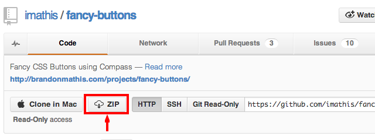
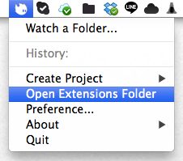
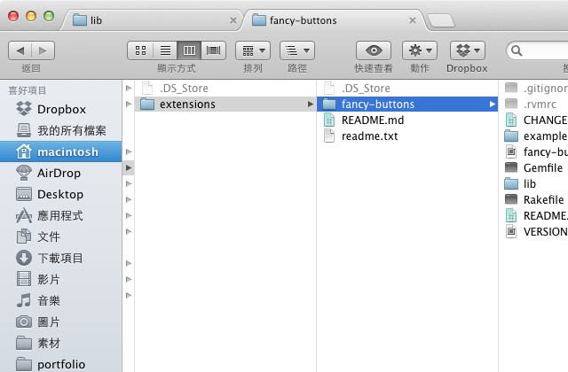
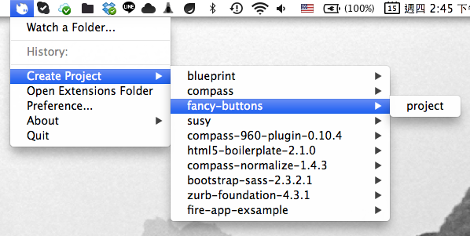

使用 Extension
Fire.app 已內建了一些可供選用的 extension，若想使用其他 extension ，以下提供兩種方法：
使用 Fire.app 內建功能
點擊 Fire.app 的 icon ，選擇 "Open Extensions Folder"， Fire.app 會直接開啟放置 extension 的資料夾。只要將想使用的 extension 放入該資料夾， Fire.app 在啟動時便會讀取它，該 extension 即可被使用於任何被 Fire.app watch 的專案，亦會出現在 "Create Compass Project" 之選單中。
除了安裝自己想要的新 extension 之外，若內建之 extansion 版本不適用，亦可用相同方法將內建版本覆蓋成自己想使用的版本。
以安裝 Fancy Buttons 為例
此處以安裝 fancy-buttons 作為使用範例。以下列出詳細步驟：
- 下載 fancy-buttons 之 zip 檔案
 - 解壓縮下載的 zip 檔案

- 開啟 "lib" 資料夾，內有一個檔案內容為註冊路徑之 "fancy-buttons.rb" 檔案，務必將解壓縮後之資料夾更名為與此檔案相同，此例即為 "fancy-buttons"

- 點擊 Fire.app 的 icon ，選擇 "Open Extensions Folder" ，此動作會開啟放置 Extension 的資料夾。
 - 將步驟 3 中更名完畢的資料夾搬移至此資料夾中
 - 關閉 Fire.app 並重新開啟一次，在 "Create Compass Project" 的選單中即可看見剛才安裝的 extension

使用 Ruby gem
注意！不建議初學者使用！
點擊 Fire.app 的 icon ，點擊 "Preference" 中的 "Compass" 項目，並在 "Compass version" 項目選擇 "Custom" 並指定欲使用的 gem path ， Fire.app 將試著讀取它。由於 Fire.app 使用的是 JRuby 故 native gem 並不會正常作用。